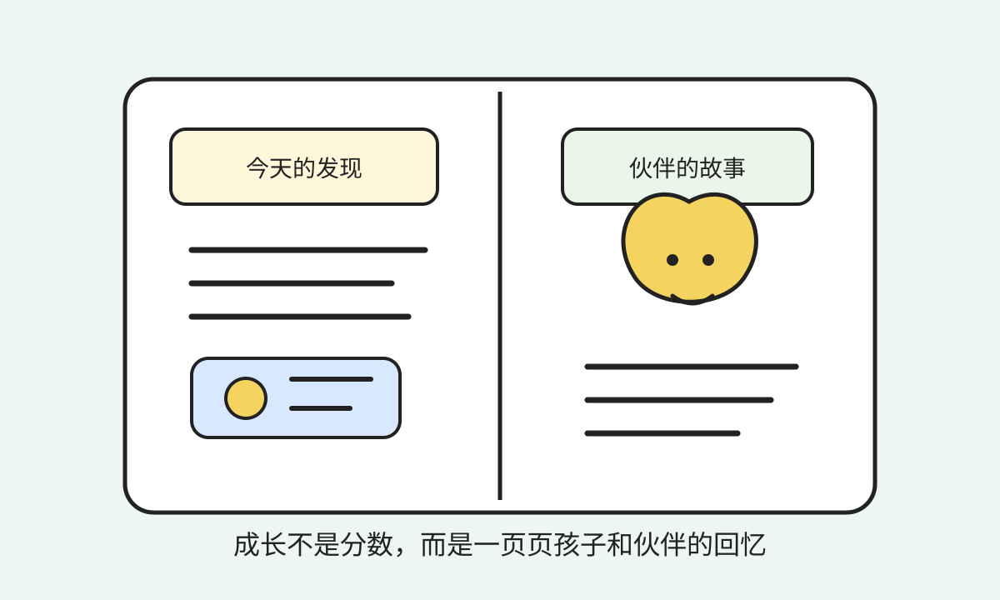

分数定义人
孩子很容易被成绩、排名和标签理解，而不是被真实经历和成长轨迹理解。
最终愿景
未来知识会越来越容易获得，真正稀缺的会变成好奇心、真实经验、生命力、专注力、想象力和合作能力。这个项目想做的不是新的网课、题库或分数系统，而是把孩子的想象、学习、行动和回忆连接成一段长期成长故事。

AI 会把公共知识和很多经验知识的调用成本降得很低。过去教育把大量精力放在“记住知识、接受讲授、通过考试”上，但未来真正拉开差距的，可能不是谁记得更多，而是谁更会提问、行动、创造、复盘和协作。
孩子很容易被成绩、排名和标签理解，而不是被真实经历和成长轨迹理解。
知识常常停在题目里，没有变成观察世界、解决问题和创造作品的能力。
孩子做过的尝试、失败、作品和闪光时刻，很少被长期记录和重新看见。
开发时可以有内部指标帮助系统判断，但这些指标不能展示给孩子、家长或外部机构。人不能由数值定义，成长也不能被包装成新的优绩主义。

这个项目真正的核心，不是“学了多少知识”，也不是“在线多久”，而是两个长期机制：孩子是否在变得更完整，以及孩子是否和自己的伙伴形成了健康、可信、能共同成长的关系。
系统内部会持续观察孩子在好奇心、真实经验、生命力、专注力、想象力和合作能力上的变化。它关心的不是孩子有没有刷更多题，而是有没有提出自己的问题、完成真实行动、创造作品、面对失败并复盘。
这个机制只用于生成更合适的挑战、反馈和保护建议，不能变成分数、排名、标签或家长监控工具。
孩子必须喜欢并信任自己的 AI 伙伴，伙伴才可能长期陪在身边。系统需要让伙伴记住孩子重视的事，尊重孩子的选择，在孩子失败时不羞辱、不审判，并在关键时刻给出合适建议。
这个机制不是为了操控孩子，也不是制造依赖，而是让孩子感到“它理解我，但不会替我活”。
伙伴记住孩子重视的事，尊重孩子的选择，在合适的时候给建议，而不是替孩子做决定。
挑战不只发生在屏幕里，也鼓励观察、制作、采访、运动、合作和复盘。
孩子学到的知识会变成伙伴技能、策略选择、故事变化和下一次探索入口。
系统把孩子的尝试、作品、失败和发现沉淀成回忆，而不是只留下完成记录。
未来可以支持孩子和同伴一起完成项目，但权力关系必须清晰，不能变成排名竞赛。
长期看，角色、作品、回忆和项目经历应成为孩子自己的数字资产，而不是平台的数据商品。


愿景越大，边界越重要。这个项目必须从一开始就抵抗“用 AI 包装旧教育”的冲动。
知识挑战不能退化成机械答题和活跃度奖励。
人格、羁绊、风险等内部判断不能被展示、比较、交易或标签化。
产品不能把孩子的内心和成长关系变成家长随时查看的控制面板。
伙伴可以有吸引力，但不能让孩子停留在无意义的信息流和奖励循环里。
AI 可以建议、提醒、陪伴和保护，但不能剥夺孩子的主观能动性。
孩子的成长材料必须被保护，不能成为平台变现和外部筛选的原料。
最终愿景很大，但现在的现实条件很小：个人开发者、没有资金、没有项目履历。第一阶段不能承诺完整教育系统，也不能承诺替代学校。我们只验证一个最小问题：